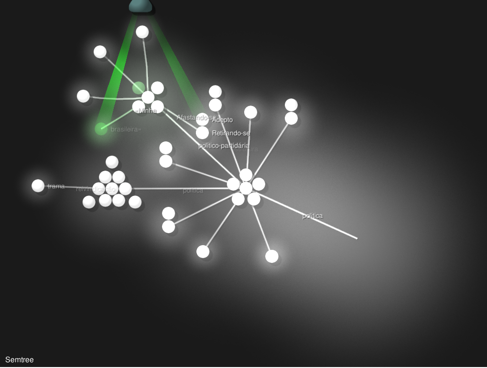

Aplicando modelagem de assuntos ao DHBB
Contents
Aplicando modelagem de assuntos ao DHBB#
Neste capítulo vamos explorar ferramentas de modelagem de assuntos e explorar aplicações ao DHBB. Como sempre, começamos com alguns imports familiares.
Show code cell source
import warnings
warnings.filterwarnings('ignore')
import os, glob, pickle
import numpy as np
import spacy
from spacy import displacy
from sqlalchemy import create_engine
from dhbbmining import *
import ipywidgets as widgets
from tqdm import tqdm
2022-11-30 13:58:13.160143: I tensorflow/core/platform/cpu_feature_guard.cc:193] This TensorFlow binary is optimized with oneAPI Deep Neural Network Library (oneDNN) to use the following CPU instructions in performance-critical operations: AVX2 FMA
To enable them in other operations, rebuild TensorFlow with the appropriate compiler flags.
2022-11-30 13:58:13.351568: E tensorflow/stream_executor/cuda/cuda_blas.cc:2981] Unable to register cuBLAS factory: Attempting to register factory for plugin cuBLAS when one has already been registered
2022-11-30 13:58:13.972391: W tensorflow/stream_executor/platform/default/dso_loader.cc:64] Could not load dynamic library 'libnvinfer.so.7'; dlerror: libnvinfer.so.7: cannot open shared object file: No such file or directory
2022-11-30 13:58:13.972470: W tensorflow/stream_executor/platform/default/dso_loader.cc:64] Could not load dynamic library 'libnvinfer_plugin.so.7'; dlerror: libnvinfer_plugin.so.7: cannot open shared object file: No such file or directory
2022-11-30 13:58:13.972480: W tensorflow/compiler/tf2tensorrt/utils/py_utils.cc:38] TF-TRT Warning: Cannot dlopen some TensorRT libraries. If you would like to use Nvidia GPU with TensorRT, please make sure the missing libraries mentioned above are installed properly.
2022-11-30 13:58:16.026417: W tensorflow/stream_executor/platform/default/dso_loader.cc:64] Could not load dynamic library 'libcudnn.so.8'; dlerror: libcudnn.so.8: não é possível abrir arquivo compartilhado: Arquivo ou diretório inexistente
2022-11-30 13:58:16.026447: W tensorflow/core/common_runtime/gpu/gpu_device.cc:1934] Cannot dlopen some GPU libraries. Please make sure the missing libraries mentioned above are installed properly if you would like to use GPU. Follow the guide at https://www.tensorflow.org/install/gpu for how to download and setup the required libraries for your platform.
Skipping registering GPU devices...
Vamos também carregar o modelo de NLP para a língua portuguesa do Spacy:
# Descomente a linha abaixo para instalar
#!python3 -m spacy download pt_core_news_sm
nlp = spacy.load("pt_core_news_sm")
Agora faremos alguns imports novos, particularmente da biblioteca Gensim, que nos oferece as ferramentas que necessitamos para modelagem de assuntos.
from string import punctuation
from gensim.test.utils import datapath
from gensim import utils
from gensim.models import Word2Vec, word2vec
Para minimizar o uso de memória, vamos construir uma classe para representar o nosso corpus como um iterador, operando diretamente do banco de dados. Desta forma, ao fazer nossas análises, podemos carregar um documento por vez para alimentar os modelos, sem a necessidade de manter todo o corpus na memória, economizando memória RAM.
eng = create_engine("sqlite:///minha_tabela.sqlite")
class DHBBCorpus:
"""
Iterador de documentos quebrados em frases
"""
def __init__(self, ndocs=10000):
self.ndocs = min(7687,ndocs)
self.counter = 1
def __iter__(self):
with eng.connect() as con:
res = con.execute(f'select corpo from resultados limit {self.ndocs};')
for doc in res:
d = self.pre_process(doc[0])
if self.counter%10 == 0:
print (f"Verbete {self.counter} de {6*self.ndocs}\r", end='')
for s in d:
yield s
self.counter += 1
def pre_process(self, doc):
n = nlp(doc, disable=['tagger', 'ner','entity-linker', 'textcat','entity-ruler','merge-noun-chunks','merge-entities','merge-subtokens'])
results = []
for sentence in n.sents:
s = sentence.text.split()
if not s:
continue
results.append([token.strip().strip(punctuation) for token in s if token.strip().strip(punctuation)])
return results
Abaixo um pequeno exemplo de como a classe DHBBCorpus funciona:
DC = DHBBCorpus(5)
for f in DC:
pass
print(f)
break
['«Wenceslau', 'Brás', 'Pereira', 'Gomes»', 'nasceu', 'em', 'São', 'Caetano', 'da', 'Vargem', 'Grande', 'hoje']
Word2vec#
Vamos começar pelo treinamento de um modelo word2vec. Este modelo itera 6 vezes sobre o corpus logo, devemos ver o contador atingir 46122. Estas repetições são necessárias para permitir a melhor estimação da representação vetorial das palavras em um espaço semântico.
if os.path.exists('dhbb.w2v'):
model = Word2Vec.load('dhbb.w2v')
else:
DC = DHBBCorpus()
model = Word2Vec(sentences=DC, workers=32)
model.save('dhbb.w2v')
Explorando o modelo#
Como dito anteriormente o modelo do Word2Vec representa cada palavra do vocabulário do corpus como um vetor. Vejamos as dez primeiras palavras:
for i, word in enumerate(model.wv.index_to_key):
if i == 10:
break
print(word)
de
a
do
e
da
o
em
que
no
na
Enquanto vetores podemos realizar operações aritméticas entre eles. Por exemplo se subtrairmos os vetores de Deputado e deputado encontraremos que a magnitude do vetor resultante é bem pequena, pois estão muito próximos no espaço vetorial:
vec = model.wv['Deputado'] - model.wv['deputado']
print(f"Todos os vetores tem dimensão {len(vec)}")
np.linalg.norm(vec)
Todos os vetores tem dimensão 100
24.32071
O tamanho total do vocabulário (palavras distintas) é de:
print(f"{len(model.wv.index_to_key)} palavras")
38762 palavras
Usando a mesma lógica de operações sobre os vetores, podemos usar palavras como representantes de seu significado, efetivamente estabelecendo um cálculo conceitual. Por exemplo: Abaixo vamos buscar as palavras mais similares semanticamente com o conceito de direita e ao mesmos antagônicas ao conceito de “Comunista”. Como o corpus do DHBB tem um claro viés político, vemos o termo direita tomar a conotação política usual.
model.wv.most_similar(positive=['direita'],negative=['Comunista'], topn=20)
[('progressistas', 0.5529391169548035),
('segmentos', 0.5388556718826294),
('conservadores', 0.5193644165992737),
('antigetulistas', 0.515348494052887),
('setores', 0.5146178603172302),
('nacionalistas', 0.5058426856994629),
('esquerda', 0.5054914951324463),
('oposição', 0.4820389747619629),
('extrema', 0.47334492206573486),
('oposicionistas', 0.4595625698566437),
('adeptos', 0.44704267382621765),
('udenistas', 0.44662249088287354),
('centro-esquerda', 0.44410112500190735),
('radicais', 0.43817466497421265),
('pessedistas', 0.4352889060974121),
('moderados', 0.4338815212249756),
('liberais', 0.43283340334892273),
('jovens', 0.43128761649131775),
('grupos', 0.42958810925483704),
('ambientalistas', 0.42890769243240356)]
O número total de tokens no corpus é de:
model.corpus_total_words
8713256
Visualizando os vetores de palavras#
Como os palavras estão inseridas um espaço vetorial de dimensão 100, fica difícil visualizar o seu posicionamento relativo mas podemos nos utilizar de métodos de redução de dimensionalidade com o TSNE, para visualizarmos um pequeno numero (200) delas.
from sklearn.decomposition import IncrementalPCA # inital reduction
from sklearn.manifold import TSNE # final reduction
import numpy as np # array handling
def reduce_dimensions(model):
num_dimensions = 2 # final num dimensions (2D, 3D, etc)
vectors = [] # positions in vector space
labels = [] # keep track of words to label our data again later
i = 0
for word in model.wv.index_to_key:
vectors.append(model.wv[word])
labels.append(word)
i+=1
if i>200:
break
# convert both lists into numpy vectors for reduction
vectors = np.asarray(vectors)
labels = np.asarray(labels)
# reduce using t-SNE
vectors = np.asarray(vectors)
tsne = TSNE(n_components=num_dimensions, random_state=0)
vectors = tsne.fit_transform(vectors)
x_vals = [v[0] for v in vectors]
y_vals = [v[1] for v in vectors]
return x_vals, y_vals, labels
x_vals, y_vals, labels = reduce_dimensions(model)
def plot_with_plotly(x_vals, y_vals, labels, plot_in_notebook=True):
from plotly.offline import init_notebook_mode, iplot, plot
import plotly.graph_objs as go
layout = go.Layout(
autosize=False,
width=800,
height=600
)
trace = go.Scatter(x=x_vals, y=y_vals, mode='text', text=labels, opacity=0.8)
data = [trace]
fig = go.Figure(
data= data,
layout= layout)
if plot_in_notebook:
init_notebook_mode(connected=True)
iplot(fig, filename='word-embedding-plot')
else:
plot(fig, filename='word-embedding-plot.html')
plot_with_plotly(x_vals, y_vals, labels)
Outros exemplos de combinação de conceitos.
model.wv.most_similar(positive=['deputado', 'mulher'], negative=['homem'])
[('deputada', 0.707239031791687),
('senadora', 0.6504750847816467),
('governadora', 0.5311956405639648),
('vaga', 0.5001533031463623),
('senador', 0.49622222781181335),
('bancada', 0.49382296204566956),
('prefeita', 0.4898069202899933),
('esposa', 0.4874173700809479),
('vereadora', 0.477497398853302),
('ex-deputado', 0.4704161286354065)]
model.wv.most_similar(positive=['Sergipe', 'Salvador'], negative=['Bahia'])
[('Aracaju', 0.7568933963775635),
('Fortaleza', 0.7413235306739807),
('Maceió', 0.7330026030540466),
('Manaus', 0.729759693145752),
('Curitiba', 0.722693920135498),
('Teresina', 0.7146587371826172),
('Cuiabá', 0.7008069753646851),
('Dourados', 0.6986944675445557),
('Belém', 0.6970897912979126),
('Goiânia', 0.6968613862991333)]
model.wv.most_similar(positive=['congressista', 'política'], negative=['homem'])
[('independente”', 0.5179454684257507),
('Iniciando-se', 0.47886374592781067),
('turística', 0.477364718914032),
('duradouras', 0.4718947410583496),
('“política', 0.4573584198951721),
('induzida', 0.45302215218544006),
('marxista”', 0.4503825306892395),
('conflituosas', 0.45008936524391174),
('pragmática', 0.4451919496059418),
('stalinista', 0.4449922740459442)]
model.wv['congressista'] + model.wv['política']-model.wv['homem']
array([-1.1804812 , 0.17904007, 2.7701726 , 2.2788234 , -2.3939579 ,
-1.6261489 , 3.037264 , -1.5370936 , 0.1686287 , 1.7679174 ,
-0.6206008 , -1.4379971 , 0.9625195 , 5.3786445 , -1.5540149 ,
-0.00777411, -1.401691 , -4.2874527 , -0.82898766, 1.8527349 ,
1.1073897 , 0.4124229 , -1.7202759 , -1.9285159 , 0.22249055,
-0.1637733 , 0.3505941 , -1.6477919 , 3.5996528 , -1.884695 ,
0.70941716, 2.4855223 , 0.19784053, 1.0554858 , -2.0812526 ,
0.25975254, 1.0439771 , 0.40970242, 0.78404856, -2.2612848 ,
1.7169695 , 0.73526394, 1.4105549 , 4.066178 , -0.40555423,
1.8521545 , 3.7054353 , 1.3822607 , -4.056506 , 1.9932911 ,
0.89136565, -2.6281335 , 3.6849546 , 3.6759586 , -0.3893448 ,
-0.93963474, 3.059989 , 0.07065499, -0.69516784, -1.2888556 ,
0.92977023, -1.6649121 , 2.6862006 , -2.4784298 , 1.8600826 ,
0.779212 , 2.1920981 , -1.9809456 , -2.688896 , 0.60114765,
-2.3174565 , 0.08518887, 0.43477178, 1.2217847 , 0.9667772 ,
1.8949485 , 1.2996533 , 2.6153111 , -0.04217112, 0.72740364,
-0.7117096 , -0.73151827, 0.16029513, 0.06895769, -0.17937306,
0.48638743, -0.52041715, -2.0970736 , -1.1521842 , -3.9579785 ,
0.51819354, 0.12455559, 2.2292786 , 0.33785737, -0.4980077 ,
-2.9939485 , -2.5539153 , -1.4805562 , 3.1075735 , 0.99266756],
dtype=float32)
Word Movers Distance#
Este método permite que calculemos a distância entre dois documentos mesmo que estes não contenham palavras em comum. Este método foi proposto no artigo “From Word Embeddings To Document Distances”.
!pip install pyemd
Defaulting to user installation because normal site-packages is not writeable
Requirement already satisfied: pyemd in /usr/local/lib/python3.10/dist-packages (0.5.1)
Requirement already satisfied: numpy<2.0.0,>=1.9.0 in /usr/local/lib/python3.10/dist-packages (from pyemd) (1.23.5)
DC = list(DHBBCorpus(5))
model.wv.wmdistance(document1=DC[1],document2=DC[2])
0.9949190182336695
print(DC[1])
print(DC[2])
['Brasópolis', 'MG', 'no', 'dia', '26', 'de', 'fevereiro', 'de', '1868', 'filho', 'do', 'coronel', 'Francisco', 'Brás', 'Pereira', 'Gomes', 'deputado', 'à', 'Assembléia', 'da', 'província', 'de', 'Minas', 'Gerais', 'durante', 'muitos', 'anos', 'e', 'de', 'Isabel', 'Pereira', 'dos', 'Santos']
['Fez', 'os', 'primeiros', 'estudos', 'em', 'sua', 'cidade', 'natal', 'cursou', 'humanidades', 'no', 'Seminário', 'Episcopal', 'da', 'capital', 'paulista', 'e', 'ingressou', 'em', 'seguida', 'na', 'Faculdade', 'de', 'Direito', 'de', 'São', 'Paulo', 'pela', 'qual', 'se', 'formou', 'em', '1890']
Vamos comparar o documento 1 acima (Era presidido por João Câncio da Silva) com outro sem nenhuma palavra em comum, e veremos que é possível calcular uma distância.
model.wv.wmdistance(document1=DC[1],document2='frequentou a escola religiosa em Niteroi e formou-se em 1935 pela UFF'.split())
1.170549698638756
Visualizando a Vizinança Semântica#
Por meio do programa SemanticTree, podemos construir uma visualização animada da vizinhança semântica em uma rede.
!semanticTree -h
fish: Unknown command: semanticTree
fish:
semanticTree -h
^
Para aplicar ao nosso modelo, focando no conceito de política, o comando abaixo pode ser usado:
!semanticTree -w política
fish: Unknown command: semanticTree
fish:
semanticTree -w política
^
